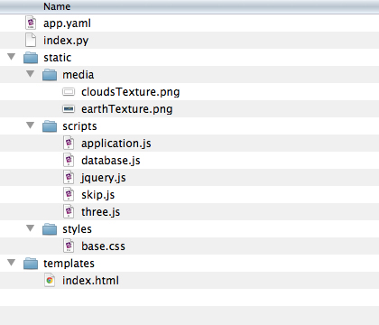

Twitter Earth
Today we’re going to workshop playing with Twitter (and Google Maps) data. Here are some links to get you started, and I’ll revise / post template code afterwards so you can get on your way with the homework.
Twitter’s REST API, version 1.0. We will be using Twitter’s deprecated API (rather than their shiny new version 1.1) because version 1.0 does not require authentication and therefore will be simpler for us to play with. But do be aware that this deprecated API will eventually disappear. (Hopefully not for some time after the semester’s end!)
Actual Twitter API JSON results.
This is literally the URL your code will use to query Twitter.
Loading it in the browser will allow you to see the plaintext that makes up Twitter’s JSON response
to your API call.
It may look daunting at first, but you can use the console to make it digestible:
Open up your console and type var data = and before you hit enter
copy and paste the twitter data. (Then, yes, hit enter.)
You’ll see that now you can inspect your data variable easily.
Your current Twitter API Rate Limit. You’re only allowed so many calls to the Twitter API within a certain amount of time per IP address. Know your limits! The Twitter documentation states that you have 150 requests per hour but is that really the case? Keep an eye on it.
jQuery’s JSONP example. This gets right at what we were discussing in class. You need to fetch some JSON data from a domain that is not your own. Modern browsers don’t want to let you do this because it’s a possible security risk. The JSONP protocol will allow you to make it happen. And jQuery makes it easy.
Google Maps Geocoding Service. You can send a location name as text to the Google Maps API and it will do its best to match that to a latitude and longitude. You might not get what you wanted (Remember Paris vs. Paris, Texas?) but you will likely get something. Have a look at the Google Maps geocoding example and be sure to view its source code. For more on the Google Maps API in general see Google Maps JavaScript examples.
Twitter Earth template
Yes. Sample code that already queries Twitter for tweets, and if those tweets don’t come with latitude and longitude this code will query the Google Maps API with whatever text the Twitter user has entered for their location. Download the new code package: twitterEarth.zip. Here’s what you’ll find inside:

This code template is also built to run in App Engine. Can’t remember what to do with App Engine files? Have a look back at this.
The code is “disarmed” at the moment:
It will use some canned tweets stored in /static/scripts/database.js
so that you can load it up and begin to test without it counting against your
Twitter API rate limit.
To re-arm find where twitterApiArmed has been set to false
and set it to true.